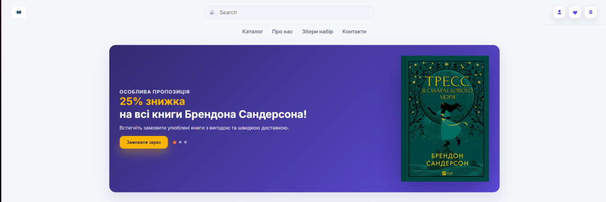
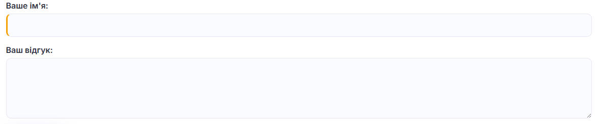
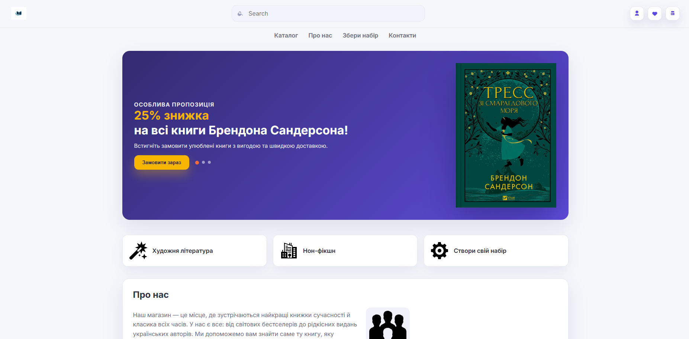

Тема: «Каскадні таблиці стилів. Селектори, ідентифікатори. Стильове оформлення текстових елементів в HTML-документах.»
Мета: Набути практичних навичок роботи з каскадними таблицями стилів (CSS), опанувати різні типи селекторів — тегу, класу, ідентифікатора, атрибутні та комбіновані; навчитися оформлювати текстові елементи, таблиці, списки, фони й контури в HTML-документах. Ознайомитися з принципами каскадування та спадкування стилів.
Посилання на виконані завдання
Репозиторій власного веб-застосунку (GitHub):
посилання
Існують кілька способів підключення таблиць стилів CSS до HTML-сторінки. Найпоширенішими є:
зовнішні стилі, таблиці стилів документу (внутрішні стилі)
та вбудовані (inline-стилі).
1. Зовнішні стилі
Застосовуються за допомогою елемента <link>, який розміщують усередині елемента
<head>:
Коли браузер зустрічає цей тег у HTML-документі, він завантажує вказаний CSS-файл і застосовує стилі,
що містяться в ньому. Такий підхід зручний тим, що спільні стилі для декількох сторінок можна винести
в окремий файл і підключати його у кожному документі за допомогою тега <link>,
не дублюючи CSS-код.
2. Таблиці стилів документу (внутрішні стилі)
Такі стилі розташовуються безпосередньо в HTML-документі й застосовуються лише до нього.
CSS-правила записуються між тегами <style>, зазвичай у секції
<head>:
<style type="text/css">
p {
font-size: 12px;
color: #fff;
}
</style>
Тег <style> дозволяє швидко визначити стилі для окремої сторінки, проте при великій
кількості стилів код стає громіздким, тому його зазвичай замінюють зовнішнім CSS-файлом.
3. Вбудовані (inline) стилі
Якщо потрібно задати стиль лише для одного елемента, можна скористатися атрибутом
style безпосередньо в тегу HTML:
<p style="color: black">Абзац із літерами чорного кольору</p>
<p style="color: white; font-weight: 600">
Абзац із кількома CSS-властивостями
</p>
Усередині атрибуту style можна вказати кілька властивостей, розділених крапкою з комою.
Inline-стилі зручні для тестування або локальних змін, але не рекомендуються для великих проєктів.
Підключення стилів у моїй роботі
Під час розробки власного веб-додатка «Bookerino» я застосував метод
підключення стилів за допомогою тега <link>.
Для цього було створено окремий файл style.css, у якому розміщено всі необхідні
CSS-правила для елементів сайту. Після цього тег <link> було додано в секцію
<head> HTML-документа, а шлях до файлу вказано в атрибуті href:
<link rel="stylesheet" href="css/style.css">
Такий спосіб дозволив зберігати стилі в окремому файлі, що значно полегшило їх редагування,
підтримку та підвищило читабельність коду всього веб-додатка.
СЕЛЕКТОРИ
У каскадних таблицях стилів (CSS) селектори визначають, до яких елементів HTML буде застосовано певні стилі.
У моїй роботі використано селектори тегів, класів, ідентифікаторів, а також комбіновані, атрибутні та з
псевдокласами/псевдоелементами. Нижче наведено приклади з реального CSS цього проєкту.
Селектори тегу
Селектори тегів застосовуються до всіх елементів певного типу. У цьому проєкті вони використовуються для
базового оформлення сторінки.
Це скидає зовнішні відступи, встановлює пріоритетний системний стек шрифтів, визначає кольори тексту та фону за допомогою CSS-змінних і застосовує згладжування шрифтів.

Рис. 1 — Селектор тегу: базові стилі для <body>.
Селектори класу
Класові селектори застосовуються до груп елементів, яким потрібне однакове оформлення.
Секція #hero є гнучкою сіткою зі зображенням та текстом, що адаптується під різні розміри екрану. Заголовок має збільшений розмір, а кольори тексту та фону встановлені за допомогою CSS-змінних.
У розділі «Сусідні селектори» (Adjacent Selectors):
Селектор h2 + p застосовує верхній відступ до елемента <p>, який одразу слідує за елементом <h2>.
Селектор section h2 + .section-header обнуляє верхній відступ усім елементам з класом .section-header, які одразу слідують за <h2>, якщо цей <h2> знаходиться всередині елемента <section>.
У розділі «Дочірні селектори» (Child Selectors):
Селектор #catalog > h2 стилізує елемент <h2>, який є безпосереднім нащадком елемента з ідентифікатором #catalog.
Селектор #feedback > h2 стилізує елемент <h2>, який є безпосереднім нащадком елемента з ідентифікатором #feedback.
Селектор .feedback-form > label застосовує нижній відступ до елементів <label>, які є безпосередніми нащадками елемента з класом .feedback-form.
Цей код використовує селектори атрибутів для стилізації текстових полів введення (зміна рамки при фокусі та додавання позначки для обов'язкових полів), а також для зміни кольору та додавання символу "↗" після захищених зовнішніх посилань.

Рис. 5 — Атрибутний селектор для поля пошуку та позначення активної сторінки.
Цей код встановлює стандартне значення box-sizing для всіх елементів на border-box, що забезпечує однорідність розмірів елементів та їхніх дочірніх елементів.

Рис. 6 — Універсальний селектор: стандартне значення box-sizing для всіх елементів.
Підсумок: використано повний набір базових селекторів і їхніх комбінацій, що забезпечує охайну структуру стилів та зручну підтримку.
У проєкті підключено шрифт Inter з Google Fonts і застосовано до тіла сторінки.
Заголовки у hero-блоці мають збільшений розмір (32px) та міжрядковий інтервал для читабельності.
Підсумок: у проєкті застосовано шрифт Inter, градієнтні фони, рамки з радіусами, тіні, гнучку сітку каталогу, стилізовані списки та адаптивність через media-запити.
Висновок
Звіт за лабораторною роботою №2 демонструє повний спектр практичного застосування CSS: від підключення стилів та використання всіх типів селекторів (тегу, класу, ID, комбінованих, атрибутних, псевдокласів/псевдоелементів) до реалізації сучасного веб-дизайну. Робота охоплює оформлення шрифтів, кольорів, фону, списків, контурів, а також включає гнучку сітку каталогу книг, CSS-змінні, переходи та адаптивну верстку.